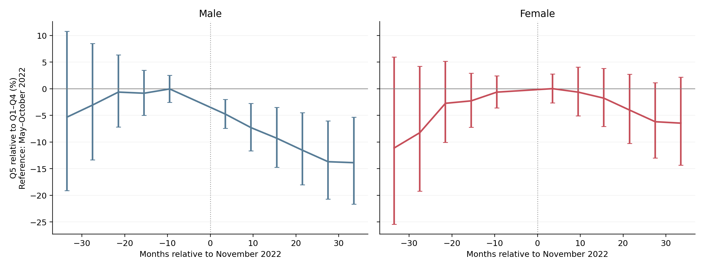
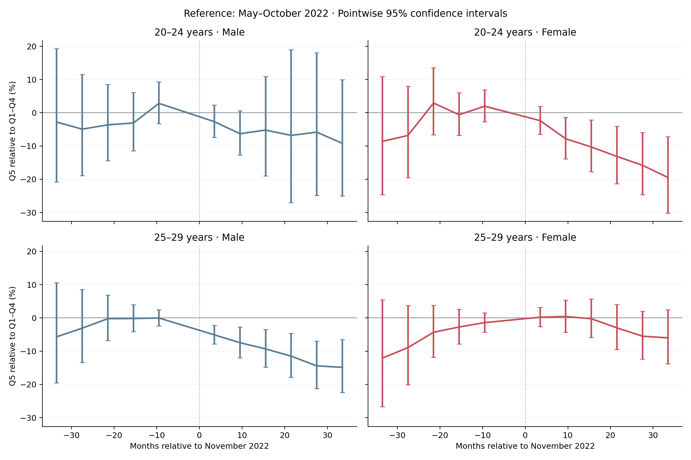
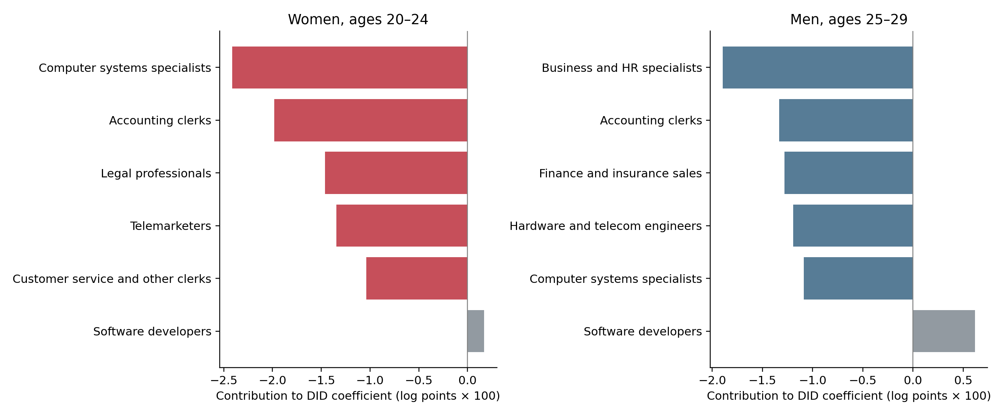

고용지수는 실제 2022년 11월 관측값을 100으로 두고 2022년 1월부터 표시합니다. 11월 관측값이 없는 반기·연간 조사 그래프는 미표시합니다.
KOREA · AI EXPOSURE AND EMPLOYMENT
AI 노출도가 높은 분야에서
어느 연령의 고용이 달라졌는가?
한국 공식 원자료로 연령·성별·직종별 월별 고용을 비교합니다. 실제 2022년 11월 관측값을 100으로 고정했습니다.
전체 15세 이상 Q5의 2025년 지수는 108.6, 22–25세 Q5는 79.7입니다. 다만 청년층은 다른 분위에서도 감소했습니다. 이 차이를 AI의 인과효과로 해석하지 않습니다.
Introduction
생성형 AI의 확산 이후 고용 변화가 높은 노출도의 직업에 집중되는지, 같은 분야에서도 초기 경력 연령과 중·장년 연령의 추세가 다른지 살펴봅니다. 고용지수는 집단의 크기 변화를 측정합니다. 고용률, 신규 채용, 해고 또는 동일인의 직업 이동과는 다릅니다.
한국 공식 원자료를 집계하고 자체 THAIE를 연결해 분석합니다.
Methods
| 자료 | 관측 | 분류 | 이 페이지의 용도 |
|---|---|---|---|
| 지역별고용조사 B형 | 2020–2025년 4월·10월, 12회 | 직업·산업 소분류, 만연령, 성별 | THAIE 분위, 특정 직업, 산업 비교 |
| 경제활동인구조사 연간자료2 | 2020–2025년 매월, 72개월 | 직업·산업 대분류, 만연령, 성별 | 월별 연령·성별 고용의 보조 비교 |
| 고용행정통계 | 2019.11–2026.10, 84개월 | 전체 직종 소분류, 원자료 5세 연령, 성별 | 고용보험 피보험자 월별 경로. 전체 취업자와 구분 |
고용행정통계의 월별 분위 비교는 공식 분류 연결이 단일한 직종에 한해 별도로 제공합니다. 직종별로 모호한 분위 연결은 제외하고, 각 연령에서 남녀의 포함 직종과 관측기간을 고정했습니다. 조사자료 기반 원고의 분석과는 모집단·분류가 다릅니다.
- 유효한 취업 상태와 양의 가중치를 가진 15세 이상 표본을 집계합니다. 월별 경활 가중값은 MDIS 공식 집계 안내에 따라 1,000으로 나눕니다. 표본 행이 동일하다는 이유로 중복 제거하지 않습니다.
- 기존 지역별고용조사 분석의 연령 구간은 22–25, 26–30, 31–34, 35–40, 41–49, 50세 이상입니다. 현재 월별 행정통계 그래프는 원자료의 5세 구간을 별도로 사용하며 서로 혼용하지 않습니다.
- 기존 확정 연계 절차로 집계한 한국 직업 소분류의 GPT-5 2025 THAIE를 사용합니다. 2019–2021년 전국 취업자 가중치로 정한 Q1–Q5는 시간·연령·성별에 고정합니다. 월별 KECO 직종에는 연결 대상이 같은 분위일 때만 전달하며, 별도 과업 기반 검증으로 해석하지 않습니다.
- 연도별 지역고용 값은 4월·10월의 동등 가중 평균이며 12개월 평균이 아닙니다. 월별 경활의 연도별 값은 12개월 평균입니다. 두 조사를 한 계열로 이어 붙이지 않습니다.
- 주요 산업은 2022년 취업자가 15만 명 이상인 산업 중 고용 가중 THAIE가 높은 여섯 산업과, 사전에 관심을 둔 컴퓨터 프로그래밍·시스템 통합업입니다. 결과 변화로 산업을 선정하지 않습니다.
- 대표 직업은 222 직업군과, 2022년 취업자 10만 명 이상인 직업 중 THAIE가 높은 직업입니다. 연령·성별은 자료의 성별 코드에 따른 분류이며 성 정체성 측정은 아닙니다.
- 과거 반기조사 집계에는 비가중 표본 30개 이상의 표시 기준을 적용했습니다. 이는 월별 행정통계의 공식 공표 기준이 아니며, 현재 월별 분위 그래프에는 남녀 공통 직종의 전체 58개월 관측 및 양수 기준월 조건을 적용합니다.
각 선은 자기 집단의 2022년 11월 값을 기준으로 합니다. 지수로 집단 간 고용 규모를 비교할 수 없으며 계절조정 전 자료입니다.
직업 소분류 수준의 THAIE는 시간에 고정된 값입니다. 따라서 동일 직업을 고정하면 Q1–Q5의 독립적인 변동은 없습니다. 직업 고정 패널에서는 그 직업의 점수·분위를 함께 제시하고 연령 또는 성별 추세를 비교합니다. 회귀분석의 직업 고정효과 추정과는 다릅니다.
THAIE의 의미와 해석 범위
과업별 기존 평가 점수에 인간 예상 수행시간에 대응하는 모델의 완료 계수를 곱하고, 기존의 검증된 절차로 직업까지 집계한 지표입니다. 모델 기준은 시계열 전체에서 고정했습니다. 모델별 기술 발전을 매년 갱신한 점수가 아니며 실제 AI 도입 여부를 관측한 값도 아닙니다. 완료 계수는 실제 직장 과업의 성공확률로 검증된 값이 아닙니다. 수식과 검증
직종·연령·성별의 실제 2022년 11월 고용이 양수로 관측된 계열만 표시합니다. 누락값은 보간하거나 0으로 채우지 않습니다.
Results
전체 경로와 연령별 경로를 확인한 뒤, 고정 THAIE 분위 안의 남녀를 비교합니다. 남녀 비교 패널은 남성 파랑·여성 빨강이며, 선 굵기와 축 범위를 같게 유지합니다.
아래는 실제 관측월의 자료입니다. 고용보험 피보험자와 경제활동인구조사 취업자는 모집단이 다릅니다. 11월 관측값이 없는 기존 반기조사의 지수 그래프는 숨기고 자료·코드에서 과거 버전으로 구분합니다.
월별 01 · 다른 직종의 전체 경로는 어떠한가?
소프트웨어 개발자 외 직종도 같은 2022년 기준으로 비교합니다. 선택한 직종의 전체 연령·성별 월말 피보험자 수입니다. THAIE 분위별 집계는 아닙니다.
수치 보기
월별 02 · 같은 직종에서 연령별 경로는 어떠한가?
원자료의 5세 연령 구간을 유지했습니다. 전체 직종의 연령·성별 교차자료를 2026년 10월까지 확보했습니다. 실제 관측값만 표시합니다.
수치 보기
월별 03 · 직종과 연령을 고정하면 남녀의 경로는 어떠한가?
여성과 남성은 각각 자기 집단의 2022년 11월을 100으로 두었습니다. 인구와 세부 업무 구성을 통제한 성별 효과는 아닙니다.
수치 보기
월별 04 · 전국 전체 취업자의 연령별 경로는 어떠한가?
경제활동인구조사 72개월의 별도 결과입니다. THAIE로 구분하지 않은 전체 고용이며 소프트웨어 개발자 고용을 뜻하지 않습니다.
그래프 수치 보기
월별 05 · THAIE Q1–Q5에서 남녀 고용 경로는 어떻게 다른가?
각 분위의 패널 안에서 남성과 여성을 비교합니다. 실제 관측된 2022년 1월–2026년 10월을 표시하며, 남녀 각각 자기 집단의 2022년 11월을 100으로 두었습니다. 원자료의 5세 연령 구간을 선택합니다.
2024년 12월을 별도로 재수집하고 2025년 1월–2026년 10월 교차자료를 추가했습니다. 같은 직종 연결과 기준월을 유지해 월별 경로를 연장했습니다.
관측 고용지수는 남녀 각각의 실제 직종 구성을 포함합니다. 구성 고정 지수는 기준월의 남녀 합산 직종 비중을 공통 가중치로 두고, 직종 내부의 남녀별 고용 증가율을 비교합니다. 두 방식의 격차 방향이 다를 수 있으며 어느 방식도 인과적 성별 효과는 아닙니다.
Q1 · 가장 낮음
수치 보기
Q2
수치 보기
Q3
수치 보기
Q4
수치 보기
Q5 · 가장 높음
수치 보기
전체 연결 직종
수치 보기
남성은 파랑, 여성은 빨강입니다. 선 굵기는 같고 마커는 없습니다. 회색 음영은 지수 간 간격이며 신뢰구간이 아닙니다. 모든 패널은 선택한 연령·비교 방식에서 같은 세로축을 씁니다. 관측 지수의 전체 연결 직종은 Q1–Q5 집계 건수의 합에서 계산합니다. 구성 고정 방식의 전체 지수는 전체 포함 직종의 공통 가중치로 별도 계산합니다. 전국 전체 고용은 아닙니다.
분위 연결과 포함 범위
분위는 기존 2019–2021년 전국 고용 가중 THAIE 분류를 그대로 사용합니다. 연령·성별 안에서 다시 순위를 매기지 않습니다. 고용행정통계의 KECO2025 직종명을 공식 분류명과 일치시키고, 공식 KSCO8 연계표의 모든 하위 직업이 같은 분위에 속할 때만 포함했습니다. 여러 분위로 나뉘거나 점수가 없는 직종은 제외했으며 임의 배분 가중치를 사용하지 않았습니다.
140개 명명 직종 중 110개에서 연결 대상의 기존 KSCO 평균점수 분위가 일치했습니다. 이는 분류 간 분위 전달 조건이며, KECO 직종의 과업별 THAIE를 새로 검증한 결과는 아닙니다. 남녀 모두 58개월 전체가 관측되고 기준월 고용이 양수인 동일 직종 집합을 연령별로 고정했습니다. 자료 완전성을 표시 기간 전체에서 판단한 선택 표본이므로 전국 전체나 인과효과를 대표하지 않습니다. 포함 비중의 분모는 일반 2025직종 원표 전체이며 분류불능을 포함하고, 별도 예술인·노무제공자 직종표는 제외합니다.
2025년 고정 역량 벤치마크를 과거 고용에 적용한 기술통계입니다. 피보험자 수는 전체 취업자 수·고용률과 다르며, 같은 분위 내에서도 남녀의 세부 직종 구성과 인구가 다를 수 있습니다.
한국고용직업분류 2025 공식 해설서와 연계표월별 집계 CSV · 관측 지수와 직종 구성 고정 지수
I(관측,s,t)=100 × ΣN(s,o,t)/ΣN(s,o,0). I(구성고정,s,t)=100 × Σ[w(o) × N(s,o,t)/N(s,o,0)]. w(o)=[N(남,o,0)+N(여,o,0)]/Σ[N(남,o,0)+N(여,o,0)]. 기준월 0은 2022년 11월입니다.
분류 버전 확인사항. 실제 원표의 140개 직종명은 공식 KECO2025 명칭과 일치하지만, 고용행정통계 웹 안내에는 2018 버전 현행화 설명이 남아 있습니다. 기관의 소급 현행화 방식과 이력은 추가 확인이 필요합니다. 현재 연결은 원표의 실제 명칭을 근거로 하며, 과거 모든 시점에서 직종 범위가 완전히 동일했음을 입증한 것은 아닙니다.
월별 06 · 소프트웨어 개발자 Q5의 연령별 남녀 고용
소프트웨어 개발자는 고정 THAIE 분류에서 Q5로 연결됩니다. 아래 다섯 패널은 서로 다른 분위가 아니라 다섯 연령대이며, 각 패널에서 남성과 여성을 비교합니다. 남녀 각각 자기 집단의 실제 2022년 11월을 100으로 둡니다.
수치 보기
수치 보기
수치 보기
수치 보기
수치 보기
남성 파랑, 여성 빨강. 두 선 사이를 옅은 회색으로 채웠으며 신뢰구간이 아닙니다. 마커 없이 같은 굵기의 선을 사용하고 다섯 패널의 세로축 범위를 맞췄습니다. 실제 관측월만 표시하며 누락값은 보간하거나 0으로 채우지 않습니다. 계절조정 전 피보험자 수이며 고용률·전일제 고용·AI의 인과효과를 뜻하지 않습니다.
월별 07 · Q5 청년층의 상대적 감소는 성별로 유의한가?
남성 Q5는 감소 방향이지만 기본 DID의 5% 수준에서는 유의하지 않았고, 여성도 유의한 추가 감소가 없었습니다. 84개월 자료 중 사전 2019년 11월–2022년 10월과 사후 2022년 12월–2025년 11월을 각각 36개월로 맞췄습니다. 2022년 11월은 전환월로 제외했습니다.
청년은 원자료의 20–24세와 25–29세를 합한 20–29세입니다. 양 성별·두 연령셀이 기준월을 포함한 73개월에 모두 관측되고 양수인 동일 105개 직종을 사용했습니다. Q5는 20개, Q1–Q4는 85개이며 성별 각각 7,560개 직종·월 관측입니다. 고용보험 피보험자 수이며 고용률이나 신규 채용이 아닙니다.
| 성별 | 변화 | 95% 신뢰구간 | 양측 p | 남녀 2검정 Holm p |
|---|---|---|---|---|
| 남성 | −8.61% | −16.73% ~ +0.31% | 0.0579 | 0.1159 |
| 여성 | +1.10% | −8.58% ~ +11.81% | 0.8296 | 0.8296 |
직종별 동일가중 로그 고용 모형에 직종·월 고정효과를 적용했습니다. 표준오차는 직종 군집, 검정은 104 자유도의 양측 t검정입니다. 변화율은 exp(β)−1로 계산했으며 Q5 자체의 절대 감소율과 다릅니다. 2022년 11월=100 정규화는 직종 고정효과가 있는 로그 DID 계수에 영향을 주지 않습니다.

사전 5개 구간의 계수 공동검정은 남성 p=0.7957, 여성 p=0.3665입니다. 사전기간만 사용한 차등 선형추세 검정도 남성 p=0.5060, 여성 p=0.1858입니다. 사전 추세 차이가 검출되지는 않았지만 평행추세가 입증된 것은 아닙니다.
마지막 사후 구간인 2025년 6–11월은 남성 −13.87%(p=0.0022), 여성 −6.46%(p=0.1364)입니다. 이벤트 스터디는 직전 6개월, 평균 DID는 전체 사전 36개월이 기준이므로 후반 이벤트 계수의 유의성을 평균 DID의 유의성으로 바꾸어 해석하지 않습니다. 다운로드 CSV에는 남녀 사후 12개 계수의 Holm 보정 p값도 제공합니다.
남녀 차이는 직접 검정했습니다. 같은 직종의 로그 여성/남성 고용비에 동일 DID를 적용하면 여성의 상대적 변화가 남성보다 10.62% 높았습니다(95% 신뢰구간 +2.69% ~ +19.17%, p=0.0083). 이는 두 상대변화의 비율이며 10.62퍼센트포인트 차이나 여성 고용 자체의 증가를 뜻하지 않습니다.
| 명세 | 남성 | 여성 |
|---|---|---|
| 기본 동일직종 가중 | −8.61% (0.0579) | +1.10% (0.8296) |
| 기준월 고용규모 가중 | −8.01% (0.2577) | −3.74% (0.5699) |
| Q5 차등 선형추세 | −5.51% (0.0165) | −1.48% (0.5526) |
| Q5 차등 코로나기간 효과 | −8.65% (0.0326) | +0.24% (0.9582) |
남성 감소의 유의성은 명세에 따라 달라집니다. 차등 선형추세는 사후 자료도 사용하므로 결정적인 보정으로 간주하지 않습니다. 가중 모형은 추정대상도 다릅니다. 남녀 차이의 직접 검정은 공통 고용규모 가중 p=0.0230, 선형추세 p=0.0182, 코로나 조정 p=0.0051로 방향이 유지됐지만, 성별 AI 피해의 인과적 증거는 아닙니다.
탐색적 비교입니다. 산업별 수요·코로나 회복·연령집단 인구 변화와 역사적 직종 재분류를 완전히 통제하지 못했습니다. 완전관측·양수 조건의 선택표본이며, 2025년 고정 THAIE를 과거 고용에 연결했습니다. AI 도입 자체를 관측하지 않았고 Q1–Q4도 AI 영향을 받지 않은 집단이라고 보장할 수 없습니다.
월별 08 · 20–24세와 25–29세에서 Q5의 상대적 감소와 남녀 차이는 다른가?
25–29세에서는 남성의 상대적 변화가 여성보다 낮았고, 20–24세에서는 여성의 감소가 관측됐지만 명세에 민감했습니다. 두 결과를 하나의 성별 피해 패턴으로 묶지 않습니다.
앞선 통합 분석과 같은 105개 직종(Q5 20개, Q1–Q4 85개)을 유지했습니다. 사전 2019년 11월–2022년 10월과 사후 2022년 12월–2025년 11월 각 36개월이며, 전환월은 제외했습니다. 연령·성별 각각 7,560개 직종·월 관측입니다. 로그 피보험자 수에 직종·월 고정효과와 직종 군집 표준오차를 적용하고 104 자유도 양측 검정을 사용했습니다. 결측 대체·보간은 없습니다.
| 연령 | 성별 | Q5 상대적 변화 | 95% 신뢰구간 | 양측 p | 4검정 Holm p |
|---|---|---|---|---|---|
| 20–24세 | 남성 | −4.14% | −19.81% ~ +14.60% | 0.6397 | 1.0000 |
| 20–24세 | 여성 | −9.90% | −18.48% ~ −0.41% | 0.0415 | 0.1662 |
| 25–29세 | 남성 | −9.10% | −17.28% ~ −0.10% | 0.0477 | 0.1662 |
| 25–29세 | 여성 | +2.76% | −8.18% ~ +15.01% | 0.6319 | 1.0000 |
20–24세 여성과 25–29세 남성은 원 p값에서만 5% 수준으로 유의하며, 네 연령·성별 검정을 함께 Holm 보정하면 모두 비유의입니다. 기본 DID는 전체 사전 36개월과 사후 36개월의 상대적 변화를 비교하며, Q5 자체의 절대 감소율이 아닙니다.

마지막 사후 구간인 2025년 6–11월의 상대적 변화는 20–24세 여성 −19.49%(원 p=0.0032, 사후 24검정 Holm p=0.0544), 25–29세 남성 −14.86%(원 p=0.0009, Holm p=0.0208)입니다. 같은 구간의 20–24세 남성과 25–29세 여성은 비유의입니다. 이 이벤트 비교는 직전 6개월이 기준이므로 평균 DID의 유의성과 구분합니다.
| 연령 | 성별 | 사전 계수 공동검정 p | 사전 선형추세 p |
|---|---|---|---|
| 20–24세 | 남성 | 0.4053 | 0.5679 |
| 20–24세 | 여성 | 0.1514 | 0.3334 |
| 25–29세 | 남성 | 0.6300 | 0.4879 |
| 25–29세 | 여성 | 0.5914 | 0.1658 |
네 집단 모두 사전 추세 차이를 검출하지 못했습니다. 비유의는 평행추세의 입증이 아니며, 먼 사전 구간의 넓은 신뢰구간과 검정력에 유의해야 합니다.
| 연령 | 성별 | 기본 | 규모 가중 | 차등 선형추세 | 코로나 조정 |
|---|---|---|---|---|---|
| 20–24세 | 남성 | −4.14% (p=0.6397) | −19.60% (p=0.0022) | −4.43% (p=0.1794) | −6.09% (p=0.4637) |
| 20–24세 | 여성 | −9.90% (p=0.0415) | −18.89% (p=0.0020) | −4.87% (p=0.2041) | −10.35% (p=0.0210) |
| 25–29세 | 남성 | −9.10% (p=0.0477) | −6.60% (p=0.3647) | −5.67% (p=0.0198) | −8.94% (p=0.0284) |
| 25–29세 | 여성 | +2.76% (p=0.6319) | +1.47% (p=0.8302) | −0.47% (p=0.8369) | +1.80% (p=0.7214) |
20–24세 여성 감소는 차등 선형추세 조정에서 유의하지 않고, 25–29세 남성 감소는 고용규모 가중에서 유의하지 않습니다. 20–24세 남성은 규모 가중에서만 유의합니다. 가중 여부는 추정대상을 바꾸며, 사후 자료까지 쓰는 차등 선형추세도 결정적 보정이 아닙니다. 민감도 표의 p값은 다중검정 미보정 값이며 유의한 명세만 선택하지 않습니다.
| 연령 | 여성/남성의 상대적 변화 차이 | 95% 신뢰구간 | 원 p | 2검정 Holm p |
|---|---|---|---|---|
| 20–24세 | −6.01% | −20.49% ~ +11.12% | 0.4647 | 0.4647 |
| 25–29세 | +13.05% | +3.63% ~ +23.32% | 0.0062 | 0.0123 |
25–29세의 남녀 차이는 두 연령의 직접 대비를 Holm 보정한 후에도 유의합니다(p=0.0123). 공통 고용규모 가중(p=0.0261), 선형추세(p=0.0053), 코로나 조정(p=0.0052)에서도 여성의 상대적 변화가 더 높았습니다. 이는 상대변화의 비율이며 13.05퍼센트포인트 차이나 여성 고용 자체의 증가가 아닙니다. 20–24세의 기본 남녀 차이는 비유의이고, 공통 규모 가중에서 방향과 유의성이 달라져 안정적인 성별 차이라고 보기 어렵습니다.
남녀 격차 자체가 연령층 사이에서 다르다는 직접 검정은 기본 명세 p=0.0423이지만, 선형추세 p=0.1706·코로나 조정 p=0.0650으로 비유의입니다. 따라서 남녀 차이가 25–29세에만 존재한다고 단정하지 않습니다. 추가 대비와 민감도는 탐색적이며 전체 탐색을 포괄하는 다중검정 보정은 아닙니다.
피보험자 수는 인구 조정 고용률·신규 채용·전일제 고용이 아닙니다. 산업 수요·코로나 회복·연령집단 이동과 인구 변화, 역사적 직종 재분류를 완전히 통제하지 못했습니다. 고정 THAIE와 완전관측·양수 선택표본을 사용했고 실제 AI 도입을 관측하지 않았습니다. AI의 인과효과로 해석하지 않습니다.
월별 09 · 어떤 직종이 Q5의 상대적 감소에 기여했으며, 제외해도 유지되는가?
소프트웨어 개발자가 두 집단의 평균 DID 감소를 주도하지는 않았습니다. 20–24세 여성은 컴퓨터시스템·회계경리 등이, 25–29세 남성은 경영인사·회계경리 등이 주요 기여 직종입니다. 주요 직종을 제외하면 감소 폭과 기본 명세의 유의성이 약해집니다.
같은 105개 직종과 전후 각 36개월을 유지했습니다. 기본 DID 로그계수는 Q5 직종별 사후−사전 평균 로그 고용 변화에서 Q1–Q4의 평균 변화를 뺀 값의 평균입니다. 각 Q5 직종의 기여는 (해당 직종 로그 변화−대조군 평균 로그 변화)/20으로 계산하며 합이 원 로그계수와 일치합니다. 기여율은 이 로그계수의 분해로, 감소 인원의 비중이나 인과적 기여율이 아닙니다. 양의 기여는 상대적 감소를 상쇄합니다.

| 집단 | 직종 | 기본 DID 로그계수 기여율 | 사후 평균 인원−사전 평균 인원 |
|---|---|---|---|
| 20–24세 여성 | 컴퓨터시스템 전문가 | 23.2% | -915.5명 |
| 20–24세 여성 | 회계·경리 사무원 | 19.0% | -6,580.6명 |
| 20–24세 여성 | 법률 전문가 | 14.0% | -9.2명 |
| 20–24세 여성 | 텔레마케터 | 12.9% | -48.9명 |
| 20–24세 여성 | 안내·고객상담·통계·비서 및 기타 사무원 | 10.0% | -9,173.6명 |
| 25–29세 남성 | 경영·인사 전문가 | 19.9% | -1,159.4명 |
| 25–29세 남성 | 회계·경리 사무원 | 14.0% | -1,319.2명 |
| 25–29세 남성 | 금융·보험 영업원 | 13.4% | -52.9명 |
| 25–29세 남성 | 컴퓨터하드웨어·통신공학 기술자 | 12.5% | -580.0명 |
| 25–29세 남성 | 컴퓨터시스템 전문가 | 11.4% | -882.1명 |
상위 3개 직종의 기여율 합은 20–24세 여성 약 56.2%, 25–29세 남성 약 47.3%입니다. 기본 명세는 동일직종 가중이므로 작은 직종도 큰 직종과 같은 가중치를 받습니다. 예를 들어 여성 20–24세 법률 전문가의 평균 인원 감소는 약 9명으로 작습니다. 실제 인원 감소는 같은 집단의 안내·고객상담 등 사무원 약 9,174명, 회계·경리 약 6,581명이 가장 큽니다. 인원 차이는 사후 36개월 평균−사전 36개월 평균이며 누적 감소인원이 아닙니다.
소프트웨어 자체의 하락과 평균 DID 기여는 다른 비교입니다
소프트웨어 개발자의 2022년 11월→2025년 11월 피보험자 수는 20–24세 여성 7,638명→3,846명(−49.65%), 25–29세 남성 40,884명→34,357명(−15.96%)으로 감소했습니다. 그러나 전체 사전·사후 평균과 대조군을 비교하는 기본 DID에서는 상대적 감소를 상쇄했습니다. 전체 로그계수 대비 signed 기여율은 각각 −1.6%, −6.5%입니다. 기준월 이후의 하락이 평균 DID의 음의 기여를 뜻하지는 않습니다.
특히 25–29세 남성 Q5 전체의 사후 평균 피보험자 수는 사전보다 약 1,290명 많습니다. 이 집단의 DID는 Q5 총인원의 절대 감소가 아니라 직종별 로그 변화의 상대적 부진입니다.
| 제외 조건 | 20–24세 여성 DID | 원 p | 25–29세 남성 DID | 원 p |
|---|---|---|---|---|
| 제외 없음 | -9.90% | 0.0415 | -9.10% | 0.0477 |
| 소프트웨어 개발자 제외 | -10.55% | 0.0329 | -10.14% | 0.0257 |
| IT 4개 직종 제외 | -8.16% | 0.1042 | -9.67% | 0.0406 |
| 각 집단 기여 1위 제외 | -8.08% | 0.0808 | -7.73% | 0.0844 |
| 각 집단 기여 상위 3개 제외 | -5.23% | 0.2378 | -5.74% | 0.1983 |
| 각 집단 기여 상위 5개 제외 | -2.86% | 0.5150 | -3.59% | 0.4175 |
각 집단 기여 1위는 여성의 컴퓨터시스템 전문가, 남성의 경영·인사 전문가입니다. 상위 3개는 여성의 컴퓨터시스템·회계경리·법률 전문가, 남성의 경영인사·회계경리·금융보험 영업원입니다. IT 4개는 소프트웨어 개발자, 컴퓨터시스템 전문가, 네트워크·정보보안 전문가, 컴퓨터하드웨어·통신공학 기술자입니다.
소프트웨어를 제외해도 감소 방향과 기본 원 p값의 유의성은 유지되지만, 기여 1위 직종 하나만 제외하면 두 집단 모두 원 p≥0.05입니다. 상위 3개 제외 시 여성 −5.23%(p=0.2378), 남성 −5.74%(p=0.1983)로 약해집니다. 전체 105개 직종을 하나씩 제외하면 방향은 모두 음수였지만 여성 15회, 남성 45회에서 p≥0.05였습니다. 이 횟수는 확률이나 검정력 추정이 아닙니다.
소프트웨어 제외 후 여성은 차등 선형추세 조정에서 비유의(p=0.2516), 남성은 규모 가중·추세·코로나 명세에서도 원 p<0.05였습니다. 소프트웨어 제외 이벤트 스터디 마지막 구간은 여성 −18.89%(원 p=0.0055), 남성 −14.90%(원 p=0.0012)이며 사전 계수 공동검정은 각각 p=0.2010, p=0.4564입니다. 비유의는 평행추세의 증명이 아닙니다. 전체 제외·명세별 표는 다운로드에 제공합니다.
제외 검정은 탐색적 영향력 진단입니다. 원 결과로 기여 순위를 정한 뒤 제외했고, 남은 직종의 추정대상도 바뀝니다. 표의 p값은 미보정이며 이전 네 연령·성별 기본검정의 Holm 보정 후 비유의 결과를 뒤집는 근거가 아닙니다. 산업 수요·인구·코로나 회복·직종 재분류와 선택표본의 한계가 남아 AI 인과효과로 해석하지 않습니다.
전체 기여·제외 민감도·검증·재현 코드 · 직종별 기여 CSV · 105개 단일 직종 제외 CSV · 명세별 제외 CSV
기존 THAIE 분위 비교와 소프트웨어 사례
01 전체 고용이 늘어도, 모든 연령이 함께 늘어나는가?
전체 15세 이상에서 Q5의 2025년 4월·10월 평균 고용지수는 108.6입니다. 고노출 직업 전체의 고용 감소를 보여주는 결과는 아닙니다. 다음 단계에서 연령을 나누어 봅니다.
지역별고용조사 · 2020–2025 · 각 집단의 2022년 평균 = 100
수치 보기
02 연령을 고정하면 Q1–Q5의 경로가 달라지는가?
전체 산업·전체 성별의 22–25세를 예로 보면, 2025년 4월·10월 평균 지수는 Q1 90.1, Q2 73.0, Q3 88.4, Q4 84.3, Q5 79.7입니다. 모든 분위에서 2022년보다 감소했지만, Q5가 가장 큰 감소를 보인 것은 아닙니다. 노출도에 따른 단조로운 순서는 관측되지 않습니다.
산업을 선택해도 전국 기준 분위 경계를 유지합니다. 전체 산업은 점수가 연결된 직업의 고용입니다.
그래프 수치 보기
연평균 보조 그림 보기 · 실제 조사연월 그래프는 위에 표시

03 같은 연령에서도 남녀의 경로는 같은가?
22–25세 Q5의 2025년 지수는 여성 76.5, 남성 88.0입니다. 각각 자기 집단의 2022년 평균과 비교한 값이며, 인구·직업 구성 차이를 통제한 성별 효과는 아닙니다.
그림 파일 · 전체 산업 · 4월/10월 관측 · 현재 연령 PNG · 현재 연령 PDF · 모든 연령 PDF

Q1 · 가장 낮음
수치 보기
Q2
수치 보기
Q3
수치 보기
Q4
수치 보기
Q5 · 가장 높음
수치 보기
전체 점수 연결 직업
수치 보기
각 패널 안에서 남녀를 비교하며, 여섯 패널은 같은 세로축을 사용합니다. 전체 패널은 THAIE 점수가 연결된 직업만 포함합니다. 회색 음영은 두 지수의 차이이며 신뢰구간이 아닙니다. 각 선은 자기 집단의 2022년 평균을 100으로 사용합니다.
04 소프트웨어 개발자의 월별 경로를 더 가까이 보면
2022년 11월=100 기준으로 소프트웨어 개발자 20–24세의 2026년 10월 지수는 42.9입니다. 25–29세는 79.3, 30–34세는 130.8입니다. 원자료의 연령 구간과 고용보험 피보험자 모집단을 기준으로 비교합니다.
고용행정통계 · 표시 2022.01–2026.10 · 소프트웨어 개발자 · 월말 피보험자 · 계절조정 전
수치 보기
고용보험 피보험자 기준이며 전체 취업자 수와 다릅니다. 현재 그래프는 실제 관측월만 사용하고, 2022년 11월 기준값이 없는 연간 보기는 제공하지 않습니다.
05 소프트웨어 개발자의 연령·성별 월별 고용
소프트웨어 개발자 직종의 실제 월별 피보험자 수를 비교합니다. 연령 범위와 성별을 선택할 수 있으며, 각 계열의 2022년 11월을 100으로 두었습니다.
고용행정통계 · 2022.01–2026.10 · 소프트웨어 개발자 직종 · 월말 피보험자 수 · 계절조정 전
수치 보기
전체 취업자가 아닌 고용보험 피보험자 기준입니다. 실제 관측월만 사용하며 누락값은 보간하거나 0으로 채우지 않습니다.
추가 비교와 기존 조사 결과
1. 컴퓨터 시스템 및 소프트웨어 전문가의 연령별 고용
KSCO 222. 순수한 소프트웨어 개발자만을 분리한 결과가 아닙니다. 조사시점별 원자료를 연도별로 평균했습니다.

| 연령 | 2025년 지수 | 2022년 대비 |
|---|---|---|
| 22–25 | 90.5 | -9.5% |
| 26–30 | 113.7 | +13.7% |
| 31–34 | 132.6 | +32.6% |
| 35–40 | 113.0 | +13.0% |
| 41–49 | 129.3 | +29.3% |
| 50+ | 174.8 | +74.8% |
3. 직업을 고정한 연령별·성별 고용
그래프 수치 보기
4. 연령을 고정한 성별·THAIE 분위별 고용
같은 연령·분위·산업 안에서도 남녀의 세부 직업 구성이 다를 수 있습니다. 성별 효과를 인과적으로 식별하는 비교가 아닙니다.
그래프 수치 보기

5. 대표 산업을 고정한 연령별 고용
그래프 수치 보기
Discussion
1. 전체 고용의 증가와 청년층 감소가 동시에 나타납니다
2022년 11월을 100으로 두면, 2026년 10월 소프트웨어 개발자 전체 피보험자 지수는 106.4입니다. 같은 기간 20–24세는 42.9, 25–29세는 79.3으로 하락했습니다. 직종 전체의 성장만으로 초기 경력층의 고용 상황을 판단하기 어렵습니다. 정책적으로는 전체 일자리 수와 함께 청년층의 진입 기회를 별도로 살펴볼 필요가 있습니다. 다만 피보험자 수의 감소가 곧 신규 채용 감소나 AI 대체를 뜻하지는 않습니다.
2. 같은 직종에서도 연령별 경로가 갈립니다
30–34세의 지수는 130.8로 상승한 반면, 40–44세는 100.5, 45–49세는 110.5입니다. 감소가 모든 연령에서 공통으로 나타나는 흐름은 아닙니다. 이러한 차이는 경력별 노동 수요의 변화를 검토할 근거가 되지만, 연령집단의 인구 변화와 집단 간 이동도 반영합니다. 동일인을 추적한 결과가 아니므로 청년층의 일자리가 다른 연령층으로 이전됐다고 단정할 수 없습니다.
3. 성별 차이는 연령과 함께 해석해야 합니다
20–24세 지수는 여성 41.2, 남성 44.7로 모두 하락했습니다. 25–29세에서는 여성 84.8, 남성 76.1이며, 30–34세에서는 여성 141.0, 남성 126.8입니다. 여성이나 남성 한쪽이 일관되게 더 큰 감소를 겪었다는 해석은 지지되지 않습니다. 성별 비교는 연령을 고정해 수행하고, 기준시점의 집단 규모와 세부 업무 구성을 함께 확인해야 합니다.
THAIE 월별 분위 그래프에서도 직종 구성에 유의해야 합니다. 2024년 11월의 20–24세 Q3 관측 지수는 남성 91.9·여성 98.3이지만, 기준월의 공통 직종 비중으로 구성만 고정하면 남성 101.7·여성 94.7로 상대 순서가 바뀝니다. 관측 고용의 규모 변화와 직종 내부의 변화는 다른 비교이므로 두 방식을 선택해 확인할 수 있도록 했습니다.
위 1–3번은 실제 월별 피보험자 수에 대한 기술통계입니다. 통계적 검정은 아래 4번에서 별도로 제시합니다. 직종별·연령별 차이를 곧바로 AI의 인과효과로 해석하지 않습니다.
4. 월별 비교에서는 남성의 상대적 위축이 관측되지만, 유의성은 명세에 따라 다릅니다
새 84개월 자료에서 전후 각 36개월을 맞춘 20–29세 월별 DID는 남성 −8.61%(p=0.0579), 여성 +1.10%(p=0.8296)였습니다. 기본 명세에서는 두 성별 모두 5% 수준의 유의한 Q5 추가 감소가 아닙니다. 남녀 차이를 직접 검정하면 남성의 상대적 변화가 더 낮았으며(p=0.0083), 공통 규모 가중·추세·코로나 조정에서도 방향이 유지됐습니다. 다만 남성 감소 자체는 규모 가중 시 p=0.2577, 차등 추세 조정 시 p=0.0165로 유의성이 달라집니다.
이벤트 스터디 후반의 남성 감소는 직전 6개월 대비 유의하지만, 전체 사전 36개월을 기준으로 하는 평균 DID와 다른 비교입니다. 사전 계수 공동검정은 남성 p=0.7957, 여성 p=0.3665로 차이를 검출하지 못했습니다. 이는 평행추세의 증명이 아니며, 특히 먼 사전 구간의 신뢰구간이 넓습니다.
정책적으로는 고노출 직종의 청년층을 성별로 구분해 진입·이탈을 추가 점검할 근거가 됩니다. 그러나 피보험자 수는 채용이나 고용률이 아니며 산업 수요·인구·코로나 회복을 모두 분리하지 못했습니다. 고정 THAIE 분류와 2022년 11월 전후의 연관성을 AI의 인과효과로 단정하지 않습니다. 두 성별 모두 강건하게 더 감소했다거나 AI가 남성 청년을 대체했다는 주장은 지지하지 않습니다. 월별 추정 표와 그림에서 표본과 민감도를 함께 확인할 수 있습니다.
5. 25–29세의 남녀 차이와 20–24세 여성의 감소는 구분해야 합니다
연령을 나누면 기본 DID에서 20–24세 여성 −9.90%(p=0.0415), 25–29세 남성 −9.10%(p=0.0477)의 상대적 감소가 관측됩니다. 그러나 네 연령·성별 기본검정을 Holm 보정하면 모두 비유의(p=0.1662 이상)입니다. 20–24세 여성은 차등 선형추세 조정에서, 25–29세 남성은 고용규모 가중에서 유의성이 사라집니다. 감소 자체가 명세 전반에서 강건하다고 주장하지 않습니다.
더 일관된 결과는 25–29세 안의 남녀 차이입니다. 여성의 상대적 변화가 남성보다 13.05% 높았고, 직접 대비의 원 p=0.0062·두 연령 대비 Holm p=0.0123이며 가중·추세·코로나 조정에서도 같은 방향으로 유의했습니다. 반면 20–24세 기본 남녀 차이는 비유의이고 가중 시 결과도 달라집니다. 다만 남녀 격차의 연령 간 차이 자체는 추세·코로나 조정에서 비유의이므로, 성별 차이가 특정 연령층에만 존재한다고 단정하지 않습니다.
사전 추세 차이는 네 집단 모두 검출되지 않았지만 평행추세가 입증된 것은 아닙니다. 정책적으로 연령과 성별을 교차해 청년층의 진입·이탈을 점검할 근거가 되며, 피보험자 수의 변화만으로 채용 감소나 AI 대체를 확인할 수는 없습니다. 연령별 결과와 다중검정·민감도를 함께 확인해야 합니다.
6. 상대적 부진은 여러 직종에 걸치지만 통계적 유의성은 일부 직종에 민감합니다
20–24세 여성의 기본 DID 감소에는 컴퓨터시스템·회계경리 등이, 25–29세 남성에는 경영인사·회계경리 등이 기여했습니다. 소프트웨어 개발자 자체는 2022년 11월 이후 감소했지만 전체 사전·사후 평균 DID에서는 상쇄 방향입니다. 특정 기준월 이후의 하락과 대조군 대비 평균 변화의 기여는 다른 비교이므로, 소프트웨어가 전체 Q5 감소를 주도했다는 설명은 지지되지 않습니다.
소프트웨어 제외 시 기본 추정치는 여성 −10.55%(원 p=0.0329), 남성 −10.14%(원 p=0.0257)로 오히려 더 음수입니다. 그러나 기여 1위 직종 제외 시 각각 p=0.0808·0.0844로 비유의이며, 상위 3개 제외 시 감소 폭도 약해집니다. 모든 단일 직종 제외에서 방향은 유지되지만 유의성까지 강건하지는 않습니다. 분석 후 선정한 제외 검정의 미보정 p값을 확증적 증거로 제시하지 않습니다.
동일직종 가중의 기여 순위와 실제 인원 감소 순위도 다릅니다. 25–29세 남성 Q5 총인원의 사후 평균은 사전보다 높으므로 이를 절대 고용 감소로 표현하지 않습니다. 정책적으로 전체 직종 지표와 함께 세부 직종의 인원 규모·기준월 이후 경로·집단별 상대변화를 나눠 점검할 필요가 있습니다. 직종별 기여와 제외 민감도에 각 비교와 다중검정 한계를 함께 제시했습니다.
이전 분석 · 소프트웨어 개발자 중단시계열과 연간 조사 검정
소프트웨어 개발자의 20–29세/40세 이상 피보험자 수 비율은 선형 사전 추세와 월별 계절성을 가정한 중단시계열 분석에서 사후 24개월에 −33.9%(95% 신뢰구간 −38.8%~−28.6%, 양측 p<0.001)였습니다. 이 추정은 사전 추세를 연장한 가상 경로 대비 고용비 차이이며, 청년 고용 자체의 감소율이나 AI의 처리효과가 아닙니다.
독립 검토에서 추세의 함수형에 대한 민감도가 확인됐습니다. 같은 69개월·전환월 펄스·월 효과·HAC 12개월 보정을 유지한 채 공통 2차 추세를 추가하면 −14.6%(p=0.023), 사전·사후의 곡률 변화를 허용하면 −6.9%(95% 신뢰구간 −20.4%~+8.9%, p=0.363)입니다. 사전기간만으로도 곡률이 관측됐습니다(p<0.001). 따라서 상대적 위축이 통계적으로 강건하게 유의하다는 기존 표현을 수정하고, 선형 가정에 조건부인 결과로 해석합니다. 2차 모형 역시 참모형이나 인과 모형으로 확정하지 않습니다.
주 분석은 사전 2020년 1월–2022년 10월과 사후 2022년 12월–2025년 9월을 각각 34개월로 맞췄고, 2022년 11월은 별도 펄스로 흡수해 69개월을 유지했습니다. 이 검정은 2019년 11·12월 추가 확보 전 자료로 계산한 기존 결과입니다. 새 84개월 자료로 그래프를 연장했지만 해당 추정은 재계산하지 않았습니다. 전후 24개월 창·코로나 더미·HAC 6·18개월 검정은 선형 가정 안의 민감도이며, 그 안에서의 유의성이 함수형 전체의 강건성을 뜻하지 않습니다. 잔차 자기상관도 남아 있어 모형 기반 p값을 과신하지 않습니다.
AI 관련 차이는 지역별고용조사의 THAIE Q5와 Q1–Q4에서 청년 15–29세/40세 이상 인구 조정 고용비를 비교했습니다. 전후 3개 연도 창에서는 Q5의 추가 감소가 −10.3%(p=0.018)였으나, 2013–2025년 장기 추세·코로나를 반영하면 +3.2%(p=0.734), 산업별 충격까지 반영하면 +5.9%(p=0.322)로 유의하지 않았습니다. 직업 단위 사전계수 공동검정도 p=0.037이었습니다. 평행추세와 AI에 영향을 받지 않은 대조집단을 확보하지 못해 AI 고유의 인과효과를 식별하지 못했습니다. 이는 효과가 없음을 입증한 결과도 아닙니다.
| 검정 | 차이 | 95% 신뢰구간 | p값 | 표본 |
|---|---|---|---|---|
| 월별 · 선형 추세 | -33.9% | -38.8% ~ -28.6% | <0.001 | 같은 69개월 · 24개월 후 대비 |
| 월별 · 공통 2차 추세 | -14.6% | -25.4% ~ -2.3% | 0.023 | 같은 69개월 · 24개월 후 대비 |
| 월별 · 사전·사후 곡률 변화 | -6.9% | -20.4% ~ +8.9% | 0.363 | 같은 69개월 · 24개월 후 대비 |
| THAIE Q5 · 전후 3년 | -10.3% | -18.0% ~ -1.8% | 0.018 | 155개 직업 · 1,818개 연령셀 |
| THAIE Q5 · 장기 추세·코로나 | +3.2% | -14.2% ~ +24.1% | 0.734 | 156개 직업 · 3,952개 연령셀 |
| THAIE Q5 · 산업 충격·장기 추세·코로나 | +5.9% | -5.5% ~ +18.8% | 0.322 | 155개 직업 · 43,202개 연령셀 |
월별은 Newey–West HAC와 t 검정, 연간은 직업 단위 군집 표준오차와 군집 수−1 자유도를 사용했습니다. 표에는 원 p값을 제시했습니다. 선형 명세의 전체·남성·여성 세 검정은 Holm 보정 후에도 유의하지만 이는 다수의 기간·함수형·하위집단 탐색 전체를 보정한 것이 아닙니다. 이번 곡률 점검도 탐색적 민감도입니다. 월별 20–29세와 연간 15–29세는 정의·모집단이 다르며 사람 수와 연령셀 수를 혼동하지 않습니다. 연간 로그 분석은 청년·40세 이상 고용이 모두 양수인 셀을 사용하므로 0·누락 셀 제외에 따른 선택 가능성이 남습니다.
사전 추세 해석의 근거는 Roth (2022)입니다. 사전 검정 비유의는 평행추세의 입증이 아닙니다.
자료와 코드
원자료는 재배포하지 않습니다. 공개 가능한 집계 결과와 재현 코드만 제공합니다. 지역별고용조사의 작은 셀은 결측 처리했습니다. 고용행정통계는 공식 집계치이며 조사자료와 모집단이 다릅니다.
- 과거 반기조사 집계 CSV · 2022년 4·10월 평균 기준
- 월별 경활 집계 CSV · 2022년 11월=100
- 조사시점별 점수 연결률
- 수치 검증 기록
- 현행 월별 분위 그래프 재현 코드·공개 집계 입력
공식 자료는 MDIS에서 제공합니다. 월별 원자료의 DOI는 10.23333/PN.50149167.V3.9입니다. 지역고용 원자료의 연도·항목과 해시는 로컬 분석 기록에 보관했습니다. 기존 한국 페이지는 백업 후 이 페이지로 연결했습니다.
월별 소프트웨어 개발자 집계 CSV · 2022년 11월=100 · 고용행정통계 공식 출처